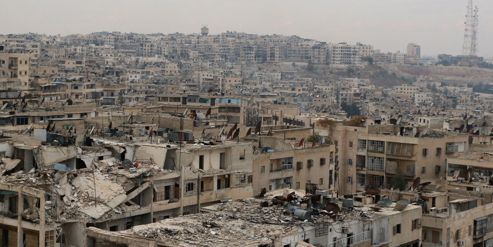

After the Queen's disappearance in 1968 everything was calm and the crime rates dropped to 13%. Now that she has returned to did the crime rates which went from 13% all the way up to 63%. We can only hope that the authorities will find the Queen and serve some sweet justice. The Interpol is already looking for clues leading to the Queen's "Hive" but so far nothing has been found. America and Canada have combined forces and efforts to find the Queen before she makes another move and more innocents will be hurt.
Ever since the city in Syria, Aleppo was attacked by the Banana Queen America followed with a invasion shortly after killing even more civilians. After the bombing protests broke out and people of Syria wanted to be treated like normal people by the US military. In response they were gunned down with a AA gun. Shortly after that Afghanistan attacked and a battle between the Afghan forces and the US forces broke out in which more Syrian civilians died. 45% of the Syrian population had enough and grabbed their guns and went to war with Afghanistan and the US in which the Afghanistan and the US forces combined together and shot down the rebeling civilians.
And now that 45% of the Syrian population was wiped out of existane, Afghanistan took half of Syria and the US took the Oil fields. Now that syrians have no resources so most of them died of hunger and thirst whilst the other ones that survived moved to the Afghan-Occupied part of syria to work as Slaves. Now that nobody is left in syria but Afghanistan and the US, Canada decided to get in on some of the action and attacked the Afghan-occupied part of Syria but quickly lost since they didn't know that part and got wiped out in under 2 weeks.